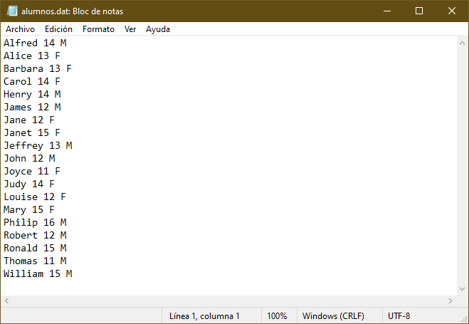
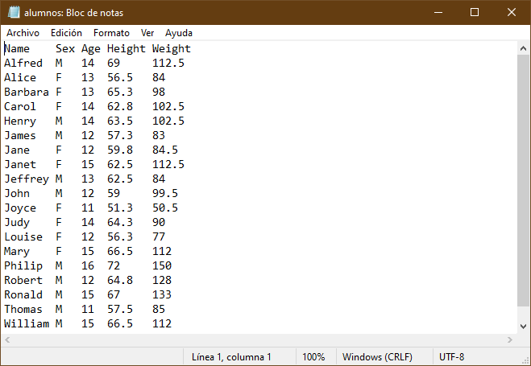
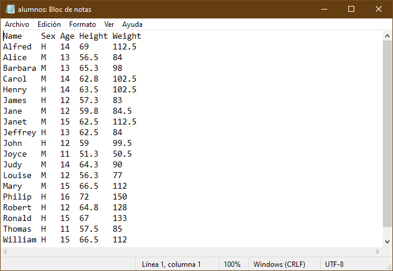

Lectura de datos¶
Los dataset son el insumo principal para analisis de datos en SAS, por ello iniciaremos con una rápida exploración.
En esta sección se presentan temas para comenzar con la lectura y escritura de datos.
Se explorarán distintas formas de leer y escribir datos de distintas fuentes y formatos de archivo.
La creación de un dataset inicia con un bloque DATA y termina con un RUN. Sin embargo, aprenderemos el uso básico de un procedimiento para leer datos de fuentes externas.
Creando datasets¶
En esta sección se mostrarán las principales formas de crear datasets:
- Introducción de forma manual
- Leyendo un archivo de texto externo
- El uso de PROC IMPORT
Se mostrarán las ideas y algunos ejemplos.
Introducción de valores de forma manual¶
La forma más fácil de crear un dataset, es con el uso de la sentencia INPUT y DATALINES con el fin de introducir valores manualmente. Estos datos fueron copiados y pegados directamente de una hoja de excel.
El siguiente ejemplo muestra como introducir datos manualmente.
1 2 3 4 5 6 7 8 9 10 11 12 13 14 15 16 17 18 19 20 21 22 | |
La sentencia DATA especifica el nombre del dataset y entre parentesis están las opciones del dataset, en este caso el dataset empleados tendrá una etiqueta para identificarlo.
Es recomendable especificar las propiedades de las variables a crear mediante la sentencia ATTRIB en donde se especifican sus propiedades.
Declaración de variables
Otra forma de declarar variables es mediante las sentencias LENGTH y FORMAT. Consulte la documentación para más información.
Nótese que para el caso de las variables de tipo caracter se hace uso de la opción LENGTH = seguido del signo de pesos para indicar que es de tipo caracter y la longitud deseada. Para el caso de variables numéricas, se debe especificar al menos un atributo, en este caso se recomienda especificar el atributo LABEL =. En el caso de la variable fnac los datos estan almacenados en formato de fecha (ddmmyyyy) por lo que se usa el informato ddmmyy10. para que lo reconozca como fehca de sas, pero se desea visualizar con el formato de fecha (ddmmmyyyy).
La sentencia INPUT sirve para indicar el nombre de las variables del dataset. Se puede poner el símbolo $ para indicar que la variable es de tipo caracter. Sin embargo en este caso, como ya se han declarado las variables se puede usar una lista, es decir, solo poner el nombre de la primer variable declarada seguido de dos guiones -- y el nombre de la última.
La sentencia DATALINES indica el inicio de los datos y finaliza con un punto y coma.
Con la sentencia RUN se cierra el bloque de instrucciones y comienza a ejecutar el proceso.
Si los datos estuvieran acomodados secuencialmente, es posible leerlos usando @@ al final de la sentencia input, este doble signo arroba es útil cuando un registro tiene más de una observación, por ejemplo si los datos estuvieran acomodados en esta forma
1 2 3 4 | |
la información podría ser leída sin ningún problema.
Lectura de datos desde un archivo externo¶
SAS puede leer datos de archivos de texto almacenados en distintos formatos, por ejemplo de ancho fijo o delimitados. Para acceder a ellos es necesario usar la referencia para apuntar a ellos, algo similar a la declaración de las librerías.
Se puede hacer mediante la sentencia FILENAME:
FILENAME fileref ‘nombre-archivo’;
donde fileref es un nombre sas que hará referencia a un archivo y nombre-archivo es el nombre de un archivo físico externo que incluye tanto la ruta como el nombre con su extensión.
Por ejemplo la siguiente sentencia asigna con el nombre archivo al archivo “datos” almacenados en formato .dat que están en la carpeta proyectos.
1 | |
También será necesario usar la sentencia INFILE. Esta sentencia le da las espeficicaciones a SAS sobre cómo leer archivos externos. Para una mayor referencia consulte la sentencia INPUT.
Lectura de un archivo de ancho fijo¶
En ocasiones se tienen los datos almacenados en formato de texto pero los datos estan alineados de tal forma que es posible saber en que posición inicia cada variable.

El ejemplo anterior muestra un ejemplo de un archivo de texto de ancho fijo, obsérvese que el id comienza en la columna 1 mientras que el nombre inicia en la columna 8.
El siguiente código muestra cómo leer datos de un archivo de ancho fijo.
1 2 3 4 | |
La diferencia con ejemplos anteriores es la sentencia INFILE. Esta sentencia especifica que se va leer un archivo externo y se usa junto con la sentencia INPUT.
En la sentencia INPUT se declaran las variables que va a contener el dataset VENTAS. SAS leerá el archivo línea por línea y almacenará los valores que encuentre en la variable declarada según la posición indicada, por ejemplo los valores que encuentre de la línea 1 a la 7 se guardarán en la variable ID, mientras que los valores de la columna 8 a la 18 se almacenarán en la variable NOMBRE, nótese que después de NOMBRE hay un signo de pesos, esto es para indicar que la variable es de tipo caracter.
Cuidado con las posiciones de columna
Se debe ser muy cuidadoso al especificar la posición de las columnas para no mezclar los valores.
En el ejemplo anterior, si se hubiera declarado VOLUMEN 54 - 61, SAS hubiera considerado la columna 61 y nos mostraría un mensaje en el log:
 Debido a que la columna 61 contiene a la letra A, SAS estaría almacenando una cadena en una variable numérica, por lo que lo que nos mostraría el error y finalmente le asignaría un valor missing a volumen.
Debido a que la columna 61 contiene a la letra A, SAS estaría almacenando una cadena en una variable numérica, por lo que lo que nos mostraría el error y finalmente le asignaría un valor missing a volumen.
Una forma alternativa de declarar las variables en la sentencia sería usar el siguiente código:
1 2 3 4 | |
Note que en la sentencia INPUT se declaran a las variables de tipo caracter de dos formas: por posición (ejemplo APELLIDO $ 19-33) y por formato (ejemplo NOMBRE $10.).
Para una mayor referencia consulte leyendo datos en bruto en la documentación de SAS.
Lectura de un archivo de texto delimitado¶
El delimitador predeterminado es un espacio en blanco. Sin embargo, los archivos de texto delimitados por otros caracteres (por ejemplo una coma, tabulador, o símbolos especiales) tambien pueden ser leídos por SAS. Para especificar el tipo de delimitador, se utiliza la opción DLM = en la sentencia INFILE.
Considere el siguiente archivo de texto. Puede notarse que está delimitado por el caracter “/” y además tiene datos perdidos (resaltados en amarillo). De hecho, los valores perdidos al final de la línea podrían hacer que SAS terminara antes de leer los datos.

El siguiente código puede ser usado para leer esos datos.
1 2 3 4 5 6 7 8 9 10 11 12 13 14 15 | |
La opción DSD es útil cuando hay un valor faltante en datos delimitados, de otra forma SAS no reconocería dos delimitadores juntos y no leería los datos correctamente.
La opción MISSOVER evita que SAS salte a una nueva linea cuando no encuentra valores válidos y asigna valores faltantes a las variables que no encuentre. TRUNCOVER funciona de manera similar a MISSOVER pero la diferencia radica en que asignaría los valores que encuentre pasando el fin de línea.
Leyendo archivos desde web¶
Para leer datos desde internet (usualmente en formato csv) se debe especificar el nombre del archivo con la sentencia FILENAME con la opción URL.
FILENAME fileref URL ‘nombre-archivo‘ < opciones-url >;
Un ejemplo para descargar datos de covid se encuentran en el siguiente programa de sas: datos_covid_web.sas.
Consulte la documentación de la sentencia FILENAME con el método de acceso URL para más información.
Selección de observaciones¶
Es posible seleccionar las observaciones que se quieren escribir en un dataset, sobre todo aquellas que cumplan ciertas condiciones. Al igual que otros lenguajes de programación SAS tiene expresiones lógicas que evalúan cierta condición.
La sintaxis es la siguiente:
IF expresión;
Esta sentencia nos permite continuar procesando aquellas observaciones que cumplen la condición, generalmente de comparación.
Una expresión puede ser el nombre de una varible y puede contener algún operador lógico y un operando. Pueden conectarse mediante conectores lógicos, comunmente llamados booleanos.
La siguiente tabla resume algunos operadores lógicos y conectores.
| Símbolo | Descripción | Ejemplo |
|---|---|---|
= o EQ |
IGUAL A | sex EQ "F" |
^= o ¬= o ~= o NE |
NO IGUAL A | sex NE "F" |
> o GT |
MAYOR QUE | age GT 13 |
< o LT |
MENOR QUE | age LT 13 |
>= o GE |
MAYOR O IGUAL A | age GE 14 |
<= o LE |
MENOR QUE O IGUAL A | age LE 14 |
IN |
(ESTÁ) EN | age in (12 14 15) o sex in ("F" "M") |
& o AND |
Y | sex EQ "F" AND age GT 13 |
! o OR o |
O | sex EQ "F" OR age GT 13 |
~ o ^ o ¬ o NOT |
NO | NOT(sex EQ "F" OR age GT 13) |
Por ejemplo el siguiente código solo contendría a empleados de Australia.
1 2 3 4 5 | |
Para elegir observaciones que no sean nulas, se puede usar la siguiente sentencia.
1 2 3 4 5 | |
Usando un procedimiento para leer datos externos¶
La forma más fácil de leer archivos externos es mediante el procedimiento IMPORT.
PROC IMPORT DATAFILE = “filename” OUT = dataset;
Este procedimiento no solo lee archivos de texto, sino tambien de Excel, SPSS, Stata e incluso tablas de Access. Para una mayor referencia vea el procedimiento IMPORT.
El siguiente código leerá un archivo en formato excel.
1 2 3 4 | |
Nótese que se ha especificado la opción DBMS = XLSX para que sas utilice los parámetros correspondientes para leer un archivo de excel. La opción REPLACE reemplazaría el dataset que tuviera el mismo nombre, de otro modo SAS mostraría un error y no crearía el dataset.
El siguiente código muestra cómo leer un archivo en formato csv.
1 2 3 4 5 6 | |
En el caso de archivos csv, hay dos sentencias adicionales, la sentencia GETNAMES = YES indica si los nombres de las variables se encuentran al inicio del archivo de texto, mientras que la sentencia DATAROW = 2 indica que los valores incian en el renglón 2.
Escritura a un archivo externo¶
SAS tambien puede ser utlizado para escribir archivos externos. En esta sección se mostrará como crear archivos de texto, asi como escribir mensaje del log a archivos externos.
Escritura de un archivo delimitado¶
El siguiente código muestra como crear un archivo de texto.
1 2 3 4 5 6 | |
Como se puede ver, se ha referenciado con la sentencia FILENAME el archivo con el nombre que en el que se desea escribir.
Nótese que en la sentencia DATA se ha especificado _NULL_, una palabra reservada para pedir que no cree ningún dataset.
La sentencia FILE da las especificaciones para escribir los archivos de texto. Es muy similar a la sentencia INFILE, para mayor referencia consulte la sentencia FILE.
Finalmente, la sentencia PUT indica lo que se va a escribir en el archivo externo, en este caso se especifican la variables de interés. Para una mayor referencia consulte la sentencia PUT.
Archivos delimitados por un caracter
SAS crea archivos delimitados por un espacio en blanco. Para crear un archivo delimitado por otro caracter (por ejemplo una coma) se puede usar la opción DLM =. Tambien se puede modificar la extensión del archivo con la sentencia FILENAME.
El resultado sería el siguiente.

Escritura de un archivo de texto de ancho fijo¶
Para crear un archivo de texto de ancho fijo, se puede especificar las posiciones en las que se escribiran las observaciones.
1 2 3 4 5 6 | |
Nótese que se han especificado los formatos de las variables y las columnas en las que se desea escribir el archivo, es algo muy similar cuando se leían los archivos con la sentencia INPUT.
Crear archivos con encabezados¶
Debido a que sas escribe directamente al archivo, es un poco complicado especificarle que en el renglón 1 escriba el nombre de las variables.
Sin embargo, el siguiente código logra especificar el nombre de los archivos en la primer línea.
1 2 3 4 5 6 7 | |
Esto se logra escribiendo la sentencia PUT justo al inicio e inmediatamente despues se carga el dataset que se quiere escribir.
Las sentencias de la línea 4 se estudiarán en la sección filtrado de datos
Leer y modificar archivos de texto¶
Es posible manipular archivos de texto mediante SAS. para ellos es necesario leerlos y volver a escribir sobre ellos.

El siguiente código muestra como actualizar ciertas variables.
1 2 3 4 5 6 7 8 9 10 11 12 | |
Note que se la sentencia LIBNAME apunta al mismo archivo que se está usando en las sentencias INFILE y FILE.
La opción SHAREBUFFERS es útil para actualizar un archivo externo y solo actualiza ciertos campos. Esta opción se usa junto con las sentencias INFILE, FILE y PUT.
La variable sex2 se usa para guardar el valor que se va a escribir en el archivo cuando sex toma cierto valor.
Cuidado con las longitudes
Se debe tener cuidado cuando se actualiza un archivo de texto. Se debe procurar que la variable que se lee como la que se escribe tengan la misma longitud, de otro modo pueden haber resultados inesperados.
El resultado se muestra a continuación

Escritura de datos con el procedimiento EXPORT¶
Así como es posible leer datos de forma externa con un procedimiento, tambien hay uno para escribir datos a archivos externos. La sintaxis es muy similar.
PROC EXPORT OUTFILE = “filename” DATA = dataset;
El siguiente código muestra la forma de escribir un dataset a un archivo csv.
1 2 3 4 | |
Para mayores referencias consulte el procedimiento EXPORT.